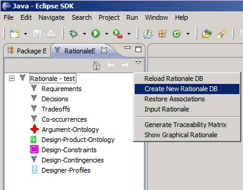

Creating New Database
You can also create a new database when SEURAT has been launched by using
"Create New Rationale DB" which is in the menu under the downward arrow at the
top of the Rationale Explorer. This database will contain the table definitions for all the rationale
items and a fully populated Argument Ontology. See the following figure:
